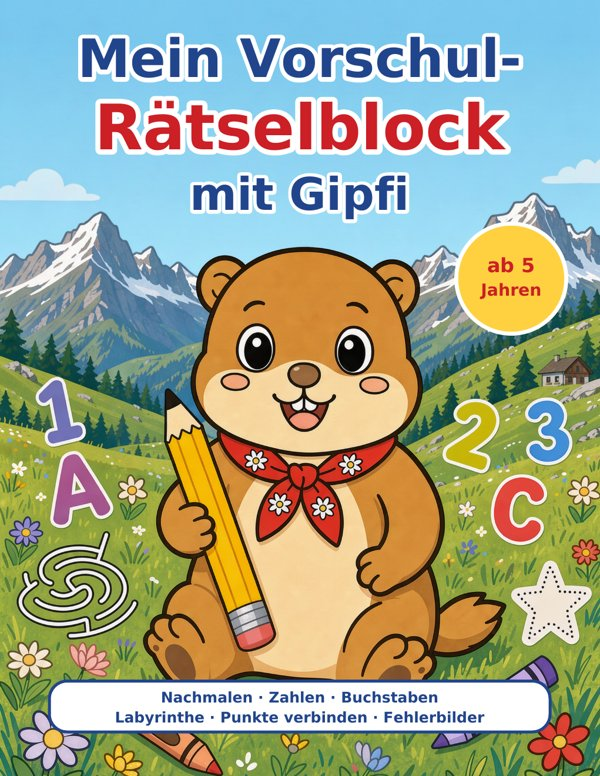

Gipfi, das kleine Murmeltier aus den Bergen, begleitet Kinder ab 5 Jahren durch das letzte Kindergartenjahr: nachmalen, zählen, erste Buchstaben, Labyrinthe und Punkte verbinden. Jede Seite ein kleines Erfolgserlebnis.

Band 1: Zahlen bis 10, Buchstaben A bis J
100 Seiten · Taschenbuch 21,6 × 27,9 cm · ab 5 Jahren
Für Kinder ab 5 Jahren im Kindergarten und in der Vorschule. Jede Aufgabe hat eine kurze Anleitung zum Vorlesen, die Bilder im Malbuch-Stil laden zusätzlich zum Ausmalen ein. Die Bände bauen aufeinander auf: Band 1 startet mit Zahlen bis 10 und den Buchstaben A bis J, Band 2 führt weiter bis 20 und zu den Buchstaben K bis T. Ein schönes Geschenk zum Geburtstag, für die Ferien oder zur Einschulung.